Peopleつくる人

President
柴部 崇

Director
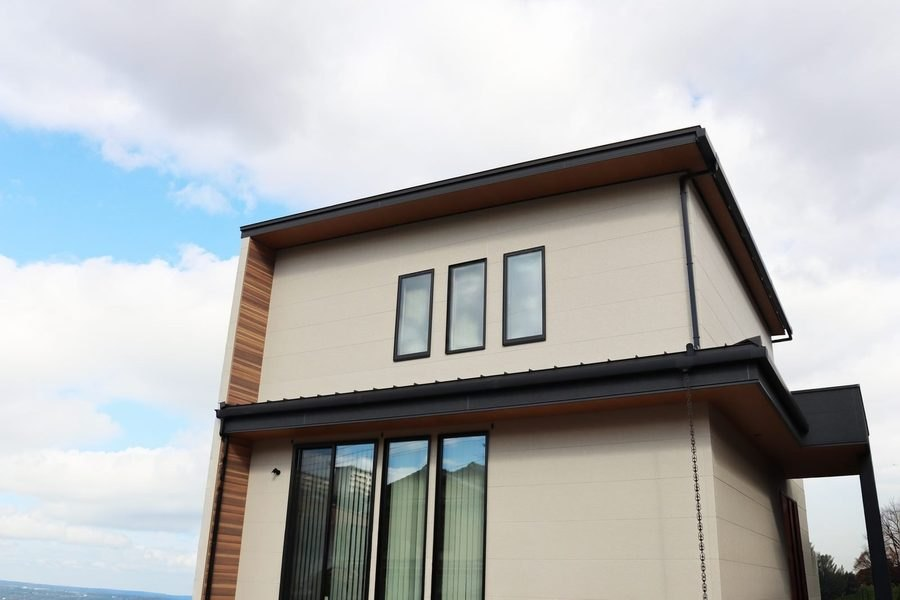
シバサンホームは、奈良市北之庄町の工務店です。
1969年から、奈良で家をつくってきました。
大工社長と二代目の専務が、親子二代で正直にお応えします。
本体価格・税込。内装・設備・照明込み。延床30坪なら本体価格2,095万円〜です。諸費用・外構・土地は別途で、総額の目安も最初にお伝えします。
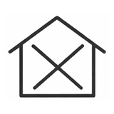
消防署・警察署など、災害時の拠点になる建物と同じ強さの基準です。全棟で構造計算をして確かめます。
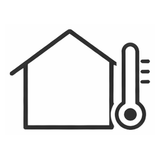
HEAT20 G2相当。冬の朝でも家の中がおおむね13℃を下回らない目安です。
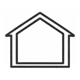
家全体のすき間の合計が、30坪の家で約50平方センチ以下。施工中に実測しています（C値0.2〜0.5）。
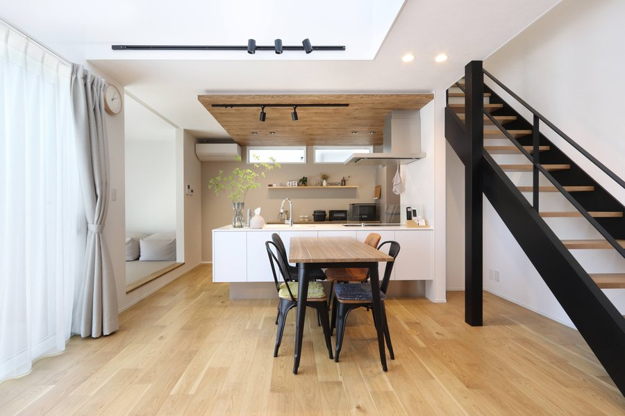
坪単価69.9万円〜（税込）。延床30坪なら本体価格2,095万円〜（税込・内装・設備・照明込み）が目安です。このほかに諸費用・外構費が別途かかりますが、総額の目安も最初にご提示します。家づくりは家の本体価格だけではなく、さまざまな諸経費が必要になります。後で予算が圧迫されないように、かかる全てのお金をお伝えします。
価格・プランの詳しい内訳を見る →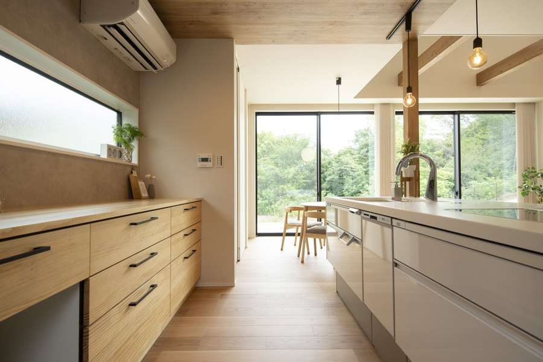
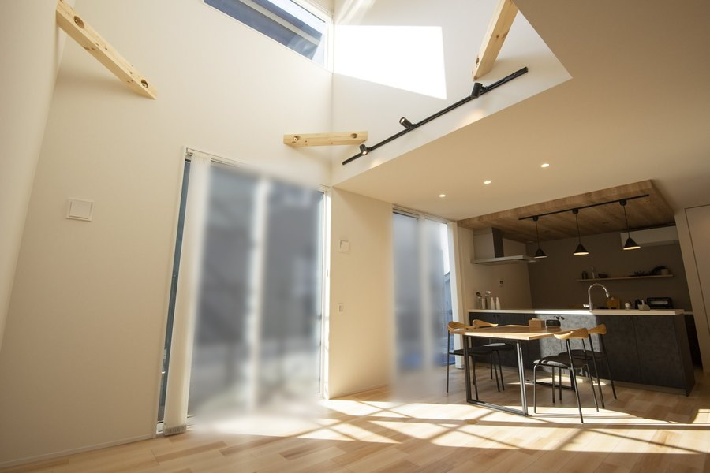
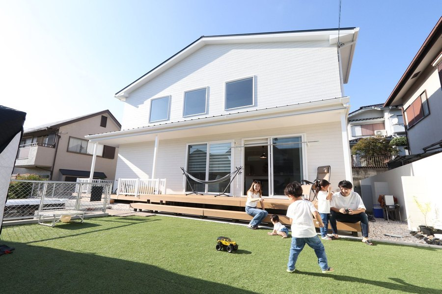
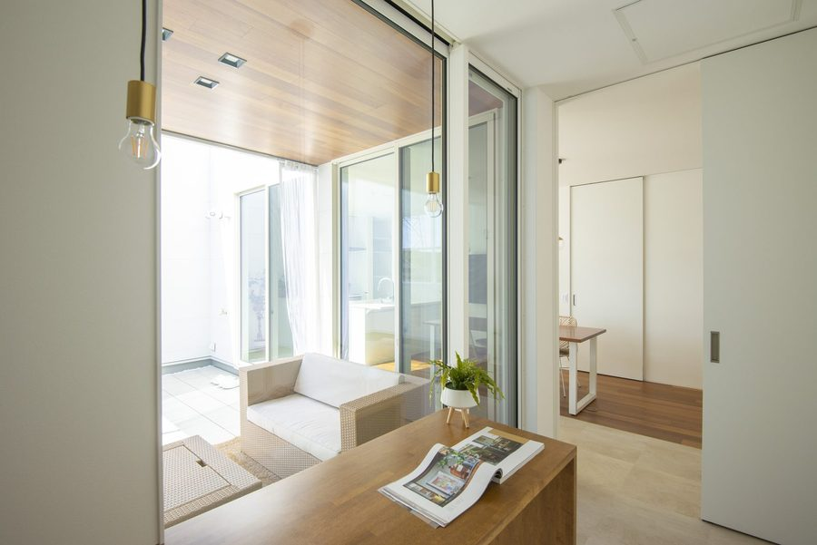
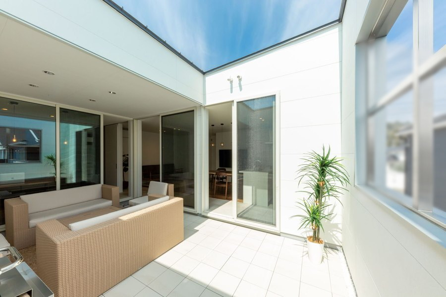
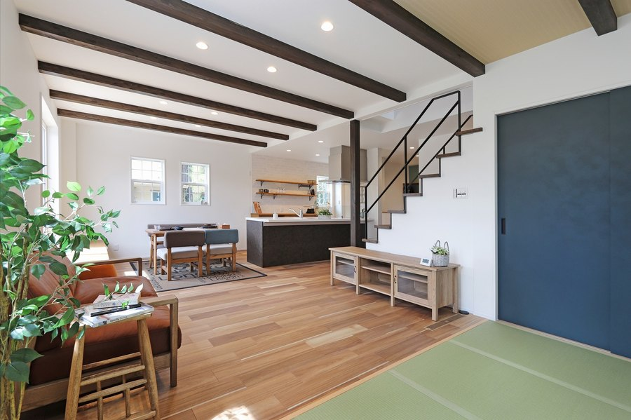
国の「みらいエコ住宅2026事業」は、奈良県のどこで建てても対象です。市町村の支援金は市町村によって異なり、奈良市には2026年7月に、市外から引っ越す子育て世帯向けの制度ができました。建てる場所が決まったら、使える制度と申請の手順をご相談のときにお伝えします。
2026年の住宅補助金をくわしく →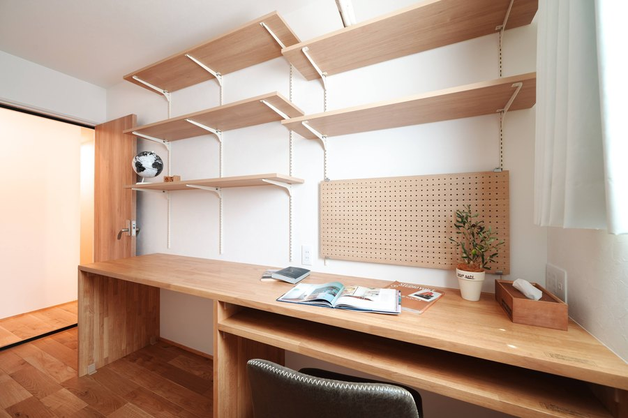
奈良盆地は、昔の川筋や水田を造成した土地が多い地域です。「奈良だから弱い」ではなく、その土地ごとに調べます。地盤改良の費用は0円で済むこともあれば、200万円かかることもあります。土地を買う前に、地盤の見方をお伝えします。建物とのトータル予算で土地を選べるのが、工務店の強みです。
地盤改良の費用と、土地を買う前に知っておくこと →シバサンホームで建てて、実際に暮らしているお住まいを見学できます。無料・随時。収納と片づけやすさ、家事ラクな動線、光熱費や住み心地。暮らしている家だからこそ、見て・聞いて・体感できることがあります。
OB様邸の見学を申し込む →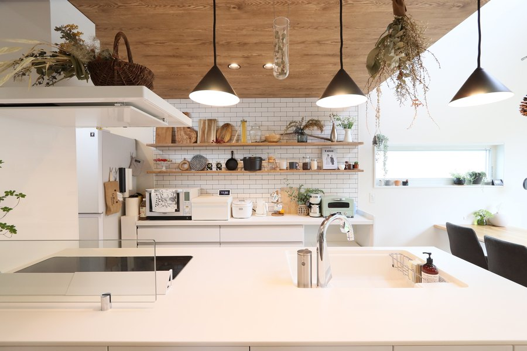